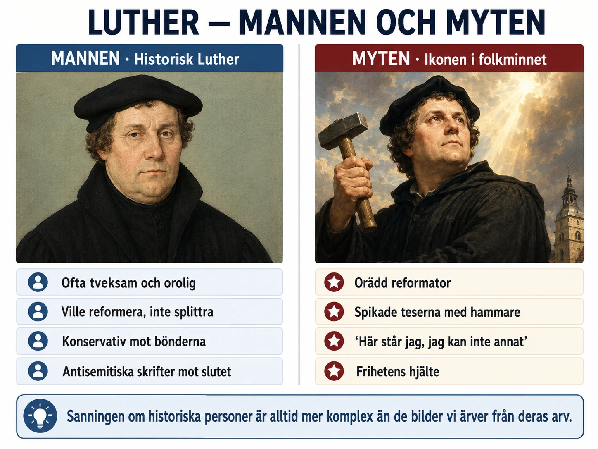

En människa, inte ett helgon
Martin Luther är en av historiens mest kända personer. I lutherska länder som Sverige har han ofta framställts som en hjälte. Han bröt med en korrupt kyrka, översatte Bibeln så att vanliga människor kunde läsa den och skapade grunden för det moderna Sverige.
Men Luther var inte ett helgon. Han var en intensiv, plågad, briljant och ofta motsägelsefull människa. Att förstå honom kräver att vi ser hela bilden — både det fantastiska och det obekväma.
I den här djupdykningen tittar vi närmare på fyra saker: vem Luther var som ung, varför han blev munk, hur myten om "hammaren mot kyrkporten" uppstod, och slutligen en mörk del av hans liv som ofta glöms bort.
Bondsonen från Eisleben
Luther föddes den 10 november 1483 i staden Eisleben i Sachsen, Tyskland. Hans far Hans hade börjat sitt liv som bonde men arbetat sig upp till bergsman — han arbetade i kopparbrytning. Familjen var inte rik, men inte heller fattig. De hade pengar nog att skicka Martin till skola.
Hans Luther hade tydliga planer för sin son. Martin skulle bli jurist. Det var en stabil karriär som skulle ge familjen status och inkomst. När Martin var 22 år gammal hade han redan tagit sin första juristexamen vid universitetet i Erfurt — ett av Tysklands ledande universitet.
Och här kommer en av de mest dramatiska episoderna i Luthers liv.
Åskvädret 1505
I juli 1505 var Martin Luther på väg hem från Erfurt till sin familj. Han råkade ut för ett kraftigt åskväder. Blixten slog ner alldeles vid honom. I panik ropade han:
"Hjälp mig, helige Anna! Jag ska bli munk!"
Helige Anna var skyddshelgon för bergsmän — en bön Martin hade hört från sin far. Han överlevde åskvädret. Och han höll sitt löfte. Inom två veckor hade han lämnat juridiken och gått in i ett augustinerkloster i Erfurt.
Detta var ett dramatiskt beslut. Hans far blev rasande. Hans utbildning, hans framtid, familjens hopp — allt verkade slänga han bort på grund av en blixt. Far och son talade knappt med varandra under flera år.
Det visar något viktigt om Luther: när han bestämde sig för något, gjorde han det helt. Han kunde inte tänka i halvmesyrer. Han skulle senare visa samma intensitet i sin kritik mot kyrkan.
Den plågade munken
Som munk var Luther ovanligt hängiven. Han bad fler timmar om dagen än vad reglerna krävde. Han fastade mer än andra. Han bekände varje liten synd för sin abbot — så detaljerat att abbotten ibland blev otålig.
Hans abbot, Johann von Staupitz, blev oroad. Luther verkade besatt av sin egen syndighet. Han kunde tillbringa timmar i bekännelse och försöka komma ihåg minsta lilla felsteg. Han kände sig aldrig värdig inför Gud.
Staupitz försökte hjälpa. Han skickade Luther till universitetet i Wittenberg för att studera teologi. Tanken var att studierna skulle ge Luther något att fokusera på utöver hans plågade samvete.
Detta var ödesdigert. För när Luther studerade Bibeln djupt — särskilt Paulus brev till romarna — började han hitta svaret på sin egen plåga.
Han läste verserna där Paulus skriver om "Guds rättfärdighet". Tidigare hade Luther tolkat detta som ett krav på människan — att människan måste bli rättfärdig för att Gud ska acceptera henne. Men nu förstod han det annorlunda. Guds rättfärdighet var inte ett krav. Det var en gåva. Gud ger människan sin egen rättfärdighet — gratis, genom tro.
Det var som om en tung börda fallit av Luthers axlar. Han skrev senare: "Då kände jag mig som om jag var född på nytt, som om jag gått genom portarna till paradiset."
Detta blev grunden för hela hans tänkande. Och det blev grunden för reformationen.
Myten om hammaren mot kyrkporten
En av de mest kända scenerna i reformationens historia är när Luther spikar upp sina 95 teser på kyrkporten i Wittenberg den 31 oktober 1517. Bilden är dramatisk: en modig munk som med hammare och spik utmanar hela den katolska kyrkans makt.
Men frågan är: hände det verkligen?
Det säkra är detta: den 31 oktober 1517 skickade Luther sina 95 teser till två adressater. Den ena var ärkebiskopen Albert av Mainz (som ansvarade för Tetzels avlatsförsäljning). Den andra var hans egen biskop. Med teserna följde ett följebrev där Luther formellt utmanade kyrkans avlatslära. Detta är dokumenterat.
Men spikade han också upp dem på kyrkporten? Här är historiker osäkra.
Berättelsen om hammaren kommer från Luthers vän Philipp Melanchthon, som först nämnde den efter Luthers död 1546. Det finns inga samtida vittnen som beskriver händelsen. Luther själv nämnde den aldrig i sina skrifter. Många historiker tror därför att händelsen aldrig hände — eller att om något spikades upp så var det senare, inte den 31 oktober.
Detta är pedagogiskt intressant. Det visar hur myter byggs upp i historien. Människor ville ha en dramatisk start på reformationen. En munk som skickar brev är inte särskilt dramatiskt. En munk som spikar upp sina teser med hammare på kyrkporten — det är en bild som fastnar.
Berättelsen är troligen myt. Men teserna spreds verkligen. Inom två veckor hade de tryckts på flera platser. Inom månader cirkulerade de över hela tyska riket. Det är det som är viktigt.
Luthers mörka sida — antisemitismen
Det här är den obekväma delen av Luthers historia. Mot slutet av sitt liv skrev Luther några av de mest fruktansvärda texter som finns mot judar i hela den kristna historien.
I sin ungdom hade Luther varit relativt vänlig mot judar. Han hoppades att judarna skulle konvertera till hans nya reformerade kristendom när de såg sanningen i evangeliet. När de inte gjorde det blev han bitter.
År 1543, tre år innan han dog, publicerade Luther en text som hette Om judarna och deras lögner (på tyska Von den Juden und ihren Lügen). Texten är fruktansvärd. Han uppmanar till att:
- Bränna ned judarnas synagogor
- Förstöra deras hem
- Ta deras heliga böcker
- Förbjuda dem att utöva sin religion
- Tvinga dem till hårt arbete eller utvisa dem från Tyskland
Detta är inte en överdrift. Luther skrev exakt så. Och texten skulle få fruktansvärda konsekvenser långt senare. När nazisterna kom till makten i Tyskland på 1930-talet använde de Luthers text för att rättfärdiga sin antisemitism. På den ökända Kristallnatten i november 1938 — då nazisterna brände ned judiska synagogor över hela Tyskland — hyllade vissa lutherska präster det som "en seger för Luthers tankar".
Detta är obekvämt. Det är obekvämt för svenska lutheraner. Det är obekvämt för den lutherska kyrkan. Många försöker bortförklara det med att Luther var "ett barn av sin tid" — att antisemitism var vanlig på 1500-talet och att Luther bara följde tidens fördomar.
Det är delvis sant. Antisemitism var verkligen vanlig i 1500-talets Europa. Men det är också så att Luther skrev mer extremt än de flesta. Och hans status som reformationens grundare gav hans ord en särskild tyngd.
Den svenska kyrkan har idag officiellt avstått från Luthers antisemitiska skrifter. År 2017, på reformationens 500-årsdag, gjorde flera lutherska kyrkor formella ursäkter för dessa texter. Det är rätt sätt att hantera arvet — att erkänna både Luthers stora bidrag och hans djupa misstag.
Hela människan
Vad ska du ta med dig om Luther?
Han var en av historiens mest fascinerande personer. Modig nog att stå emot påven och kejsaren. Konservativ nog att senare svika de bönder som tolkade hans frihetsbudskap socialt. Generös mot vanliga människor som var rädda för skärselden. Brutal i sin antisemitism mot slutet.
Inte ett helgon. Inte en demon. En människa.
Att se historiska personer som hela människor — med både ljus och skugga — är vad det innebär att tänka kritiskt om historia. Vi behöver inte välja mellan att avgudaförklara Luther eller fördöma honom. Vi kan göra något mycket svårare: förstå honom.
Och det är just denna förmåga — att se historia i sin fulla komplexitet — som är historians viktigaste lärdom.